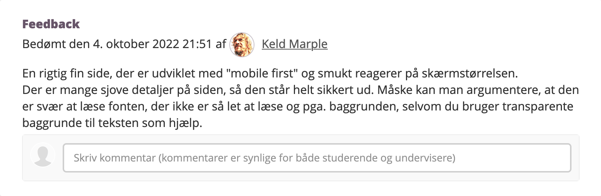

Mit emnesite er desværre gået tabt...
Desværre er mit emnesite forsvundet fra min computer af uforklarlige årsager – lige inden aflevering.. Udover min dokumentation af processen, beskrivelse af design og stil samt mit layoutdiagram og wireframe på forrige side, har jeg nedestående optagelse af hvordan sitet så ud (uden den rigtige tekst i tekstboksene.)
Jeg fik denne respons på mit emnesite på Fronter:
... Hvis muligt, vil jeg forsøge at rekreere sitet inden den mundtlige eksamen.